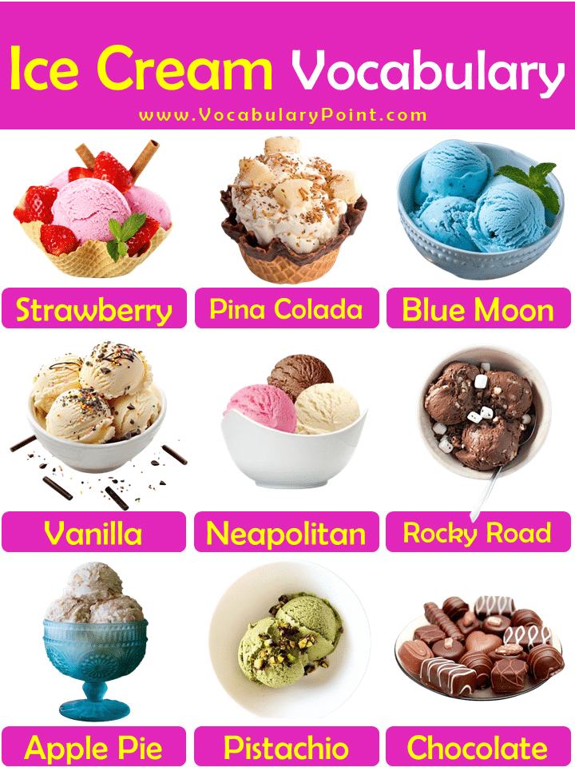
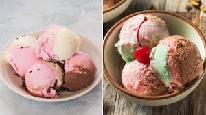
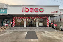
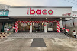

About Us

Ice cream is one of the most commonly loved desserts on this planet. It has a creamy, sweet taste that many people love. Ice cream is delicious and famous, and it is made from dairy products such as milk and cream, eggs, sugar and sorbet powder. Ice cream can be made using fruits, vegetables, and milk instead of sugar. Ice cream is one of the most commonly loved desserts on this planet. It has a creamy, sweet taste that many people love. Ice cream is delicious and famous, and it is made from dairy products such as milk and cream, eggs, sugar and sorbet powder. Ice cream can be made using fruits, vegetables, and milk instead of sugar. Ice cream is one of the most commonly loved desserts on this planet. It has a creamy, sweet taste that many people love. Ice cream is delicious and famous, and it is made from dairy products such as milk and cream, eggs, sugar and sorbet powder. Ice cream can be made using fruits, vegetables, and milk instead of sugar.

Strawberry ice cream is a classic, widely loved frozen dessert made by blending cream, sugar, and strawberries (fresh or pureed), typically resulting in a light pink color. It is a popular, nostalgic flavor that balances creamy richness with fruity, sometimes slightly tangy, flavors. It is often made using cream, condensed milk, and fruit, and can be easily made at home without a machine.
learn more
The Piña Colada is a sweet, tropical cocktail from Puerto Rico, traditionally made with white rum, cream of coconut, and pineapple juice, usually blended with ice. Invented in San Juan in 1954, this iconic, creamy cocktail is the official drink of Puerto Rico. It is often garnished with a pineapple wedge or cherry and served in a hurricane glass.
learn more
Blue Moon is a bright blue, top-secret ice cream flavor, famously popular in the Upper Midwest US, known for its sweet, citrusy, and mystery-nutty taste. Often compared to Froot Loops, cotton candy, or marshmallow, it is a key, distinct ingredient in Superman ice cream. It is widely considered a nostalgic Midwestern summer staple.
learn more
Milk: This homemade vanilla ice cream starts with 2 ¼ cups of milk. Heavy whipping cream: A cup of heavy whipping cream comes next. Sugar: White sugar sweetens things up. Vanilla: Two teaspoons of vanilla extract enhances the overall flavor. The light and creamy texture of this ice cream flavor are best for all those who do not like strong ice creams or flavor scents. Due to their high popularity, they are offered by almost every restaurant and ice cream parlor.
learn more

Neapolitan ice cream, also sometimes referred to as Harlequin ice cream, is an ice cream composed of three flavors (typically vanilla, chocolate, and strawberry) arranged side by side. Neapolitan ice cream, also sometimes referred to as Harlequin ice cream, is an ice cream composed of three flavors arranged side by side. Although Neapolitan is associated with Naples in Italy, it was first recorded in Prussia in 1839.
learn more
Rocky Road is a classic ice cream flavor consisting of chocolate ice cream, marshmallows, and nuts, typically roasted almonds. Created in 1929 by Dreyer's to mimic the candy bar, it features a creamy, rich texture with chewy and crunchy elements. It is widely considered a staple, providing a, balanced sweet and savory, and crunchy bite.
learn more
Apple pie ice cream is a popular dessert that combines the warm, spiced flavors of a classic apple pie with cold, creamy ice cream. It is frequently made by incorporating spiced apple filling (often sautéed Granny Smith apples with brown sugar and cinnamon) into a creamy base, frequently with added mix-ins like pie crust pieces, graham crackers, or caramel.
learn more
Pistachio ice cream is a popular, creamy frozen dessert characterized by its distinctively nutty, slightly earthy flavor and pale green to brown-olive hue. It is often made using real pistachios or pistachio paste, and is a key component of traditional spumoni. If you're new to pistachio ice cream, Häagen Dazs will certainly be the brand to set the highest standard. A nutty, crunchy, and creamy scoop of pistachio will pair well with robust flavors like dark chocolate, or even a drizzle of classic Hershey's chocolate syrup
learn morefeel free contact us
 
